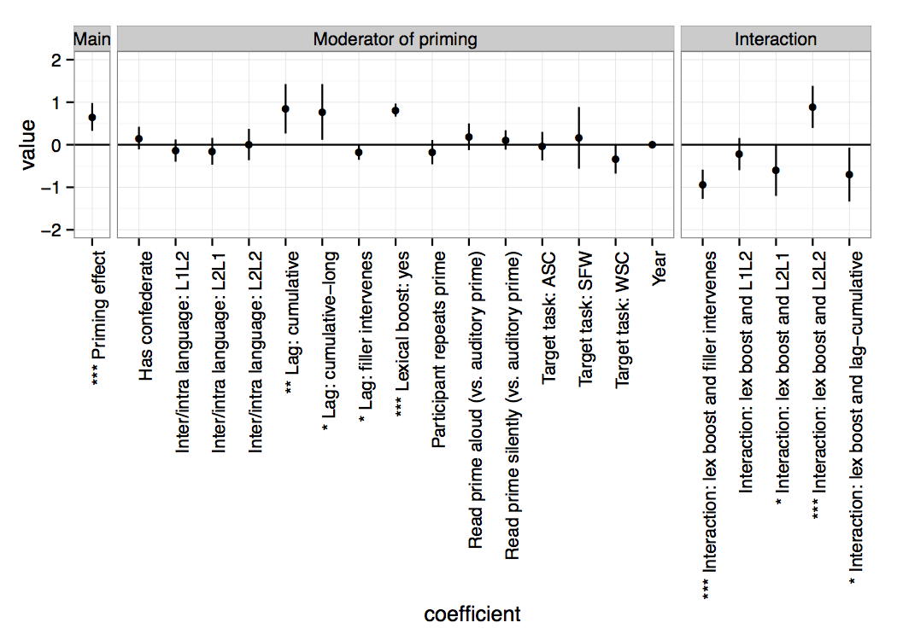

Kyle Mahowald
About me
I am a postdoctoral researcher in computer science and linguistics at Stanford University, working with Dan Jurafsky and Dan McFarland. I graduated from Ted Gibson’s psycholinguistics lab in MIT’s Brain and Cognitive Sciences department. Before that, I was a Marshall Scholar at Oxford University studying linguistics with Mary Dalrymple and Aditi Lahiri. And before that I was an undergrad in English at Harvard.11 About me: Me is the first person object pronoun in English. It goes back to the accusative and dative in Old English and before that to an Indo-European pronoun that would probably remind you of me.
Research
I am interested in the cognitive and computational structure of the lexicons of world languages, NLP, the relationship between communicative efficiency and natural language, historical English, language neuroimaging, and the interplay between language and literature. I also have interests in quantitative methods in language research and psychology more generally.
Published articles
 Mahowald et al. “Word Forms Are Structured for Efficient” showed a robust correlation, across almost 100 world languages, between orthographic probability and word frequency. K. Mahowald, I. Dautriche, E. Gibson, S.T. Piantadosi. 2018. Word Forms Are Structured for Efficient Use. Cognitive Science.
Mahowald et al. “Word Forms Are Structured for Efficient” showed a robust correlation, across almost 100 world languages, between orthographic probability and word frequency. K. Mahowald, I. Dautriche, E. Gibson, S.T. Piantadosi. 2018. Word Forms Are Structured for Efficient Use. Cognitive Science.
Z. Mineroff, I. Blank, K. Mahowald, E. Fedorenko. 2018. A robust dissociation among the language, multiple demand, and default mode networks: evidence from inter-region correlations in effect size. Neuropsychologia.
Gibson et al. “Color naming across languages reflects color use” found that the information content of world color systems varied by language, but in all cases warm colors tended to be more information-rich than cool colors. In this plot, langauges are ordered by informativity of color system. E. Gibson, R. Futrell, J. Jara-Ettinger, K. Mahowald, S. Ratnasingam, M. Gibson, S.T Piantadosi, B.R. Conway. 2017. Color naming across languages reflects color use. PNAS. 114 (40), 10785-10790.
Gibson, E., Tan, C., Futrell, R., Mahowald, K., Konieczny, L., Hemforth, B., Fedorenko, E. 2017. Don’t underestimate the benefits of being misunderstood. Psychological science, 28(6), 703-712.
I. Dautriche*, K. Mahowald*, E. Gibson, S.T. Piantadosi. 2017. Words cluster phonetically beyond phonotactic regularities. Cognition, 163, 128-145.
I. Dautriche, K. Mahowald, E. Gibson, S.T. Piantadosi. 2017. Wordform similarity increases with semantic similarity: an analysis of 100 languages. Cognitive Science. doi: 10.1111/cogs.12453
Mahowald et al. “A meta-analysis of Syntactic Priming” analyzed 71 syntactic priming papers and found a robust effect of syntactic priming that was greatly magnified by lexical boost. This plot shows model coefficients for various moderators of the priming effect. K. Mahowald, A. James, R. Futrell, E. Gibson. 2016. A meta-analysis of syntactic priming. Journal of Memory and Language, 91, 5-27.
K. Mahowald, E. Fedorenko. 2016. Reliable individual-level neural markers of highlevel language processing: A necessary precursor for relating neural variability to behavioral and genetic variability. 2016. Neuroimage, 139, 74-93. doi: 10.1016/j.neuroimage.2016.05.073.
I. Blank, E. Fedorenko, Z. Balewski, and K. Mahowald. 2016. Syntactic processing is distributed across the language network. Neuroimage, 127, 307-323.
 With SNAP Judgments, we show that small N experiments can be used to obtain quantitative linguistic data at low cost and with reliable results. This plot shows the distribution of effect sizes (which is large) for forced choice grammaticality judgments sampled from 100 examples in Linguistic Inquiry.K. Mahowald, P. Graff, J. Hartman, and E. Gibson. 2016. SNAP Judgments: A Small N Acceptability Paradigm (SNAP) for Linguistic Acceptability Judgments. Language, 92 (3), 619-635.
With SNAP Judgments, we show that small N experiments can be used to obtain quantitative linguistic data at low cost and with reliable results. This plot shows the distribution of effect sizes (which is large) for forced choice grammaticality judgments sampled from 100 examples in Linguistic Inquiry.K. Mahowald, P. Graff, J. Hartman, and E. Gibson. 2016. SNAP Judgments: A Small N Acceptability Paradigm (SNAP) for Linguistic Acceptability Judgments. Language, 92 (3), 619-635.
R. Futrell, K. Mahowald, E. Gibson. 2015. Large-Scale Evidence of Dependency Length Minimization in 37 Languages. Proceedings of the National Academy of Sciences. Published online before print August 3, 2015. doi: 10.1073/pnas.1502134112 22 See popular discussion in Science Magazine and on
Reddit Futrell, Mahowald, Gibson (2015): The dependency lengths in natural languages are minimized relative to random baseline.
Futrell, Mahowald, Gibson (2015): The dependency lengths in natural languages are minimized relative to random baseline.
R. Singh, E. Fedorenko, K. Mahowald, E. Gibson. 2015. Presupposition accommodation is costly only in implausible contexts. Cognitive Science. Published online before print July, 2015. doi: 10.1111/cogs.12260
E. Gibson, P. Jacobson, P. Graff, E. Fedorenko, K. Mahowald, S.T. Piantadosi. 2014. A pragmatic account of complexity in definite Antecedent-Contained-Deletion relative clauses. Journal of Semantics. Published online before print.
K. Mahowald and E. Gibson. 2013. Short, frequent words are more likely to appear genetically related by chance. Letter to Proceedings of the National Academy of Sciences.33 See original article by Pagel et al. here and their reply
here.
Mahowald et al. (2013): After a predictive context, people are more likely to use a shorter form of a word than after a neutral context.K. Mahowald, E. Fedorenko, S.T. Piantadosi, and E. Gibson. 2013. Info/information theory: speakers choose shorter words in predictive contexts. Cognition, 126, 313-318.
K. Mahowald. 2012. A Naive Bayes Classifier for Shakespeare’s second person pronoun. Literary and Linguistic Computing. 27 (1): 17-23. doi:10.1093/llc/fqr045
K. Mahowald. 2010. It may nat be: Chaucer, Derrida, and the Impossibility of the Gift. Studies in the Age of Chaucer. 32:129-150.
In-progress articles
K. Mahowald, P. Isola, E. Fedorenko, A. Oliva, E. Gibson. Submitted. An information-theoretic account of word memorability.
K. Mahowald, T.J. O’Donnell, and J.B. Tenenbaum. Submitted. Quantifying availability through linguistic productivity.
Conference Proceedings
R. Futrell, K. Mahowald, E. Gibson. 2015. Quantifying Word Order Freedom in Dependency Corpora. Proceedings of Depling 2015.
K. Mahowald. 2011. An LFG Account of Word Order Freezing. In M. Butt and T. H. King, eds., Proceedings of the LFG11 Conference. Hong Kong: CSLI Publications: http://www-csli.stanford.edu/publications.
Refereed Presentations
K. Mahowald, I. Dautriche, E. Gibson, A. Christophe, E. Gibson. 2014. Efficient phonological clustering in the mental lexicon. Ninth International Conference on the Mental Lexicon. Niagara-on-the-Lake, Ontario, Canada. September 30-October 2, 2014.
I. Dautriche, K. Mahowald, E. Gibson, A. Christophe, E. Gibson. 2014. Lexical clustering in efficient language design. AMLaP 2014 (Architectures and Mechanisms for Language Processing). Edinburgh, UK. September 3-6, 2014.
K. Mahowald, P. Graff, J. Hartman, E. Gibson. 2014. SNAP Judgments: Small N Acceptability Paradigm (SNAP) for linguistic judgments. AMLaP 2014 (Architectures and Mechanisms for Language Processing). Edinburgh, UK. September 3-6, 2014.
 With “Quantifying Shakespeare”, we turned the plays into social networks, where each node is a character. Here are the Tempest social networks after one act and after all five acts when Prospero has brought everyone together.K. Mahowald, A. Jacobs, A. Fahimipour, M. Kleiman-Weiner. 2013. Measure for Measure: Quantifying Shakespearean Drama. Links 2013. MIT Media Lab. July 22–23, 2013.
With “Quantifying Shakespeare”, we turned the plays into social networks, where each node is a character. Here are the Tempest social networks after one act and after all five acts when Prospero has brought everyone together.K. Mahowald, A. Jacobs, A. Fahimipour, M. Kleiman-Weiner. 2013. Measure for Measure: Quantifying Shakespearean Drama. Links 2013. MIT Media Lab. July 22–23, 2013.
K. Mahowald. 2011. An LFG Account of Word Order Freezing. Sixteenth International LFG Conference. Hong Kong. July 16–19, 2011.
Refereed Posters
K. Mahowald, M. Kline, E. Fedorenko, E. Gibson. 2015. Informativity and efficient compression of sentences. Annual CUNY Conference on Human Sentence Processing, CUNY 2015. Los Angeles, CA. March 19-21, 2014.
K. Mahowald, S.T. Piantadosi, M. Alper, E. Gibson. 2015. Lexical items are privileged slots for meaning. Annual CUNY Conference on Human Sentence Processing, CUNY 2015. Los Angeles, CA. March 19-21, 2014.
R. Futrell, K. Mahowald, E. Gibson. 2014. CLIQS: Cross-Linguistic Investigations in Quantitative Syntax. AMLaP 2014 (Architectures and Mechanisms for Language Processing). Edinburgh, UK. September 3-6, 2014.
K. Mahowald, P. Isola, E. Fedorenko, A. Oliva, E. Gibson. 2014. An information-theoretic account of word memorability. AMLaP 2014 (Architectures and Mechanisms for Language Processing). Edinburgh, UK. September 3-6, 2014.
K. Mahowald, E. Fedorenko. Reliable individual-level neural markers of language activity. Neurobiology of Language 2014. Amsterdam. August 27-29, 2014.
E. Gibson, P. Jacobson, P. Graff, K. Mahowald, E. Fedorenko, S.T. Piantadosi. Pragmatic influences on the processing of ACD relative clauses. 27th Annual CUNY Conference on Human Sentence Processing, CUNY 2014. Columbus, OH. March 13-15, 2014.
R. Futrell, K. Mahowald, S.T. Piantadosi, E. Gibson. Efficient Communication Forwards and Backwards. 27th Annual CUNY Conference on Human Sentence Processing, CUNY 2014. Columbus, OH. March 13-15, 2014.
K. Mahowald, S.T. Piantadosi, E. Gibson. 2013. Lexical clustering in efficient language design. 26th Annual CUNY Conference on Human Sentence Processing, CUNY 2013. Columbia, SC. March 22, 2013.Wolfram Alpha plot of the frequency of the name Kyle over time. It gives a good indication of when I was born and suggests that, in 50 years, Kyle will be a name we associate with older people.
Collaborators
Ted Gibson Evelina Fedorenko Steven T. Piantadosi Joshua Tenenbaum Timothy O’Donnell Richard Futrell Isabelle Dautriche Ariel James Phillip Isola